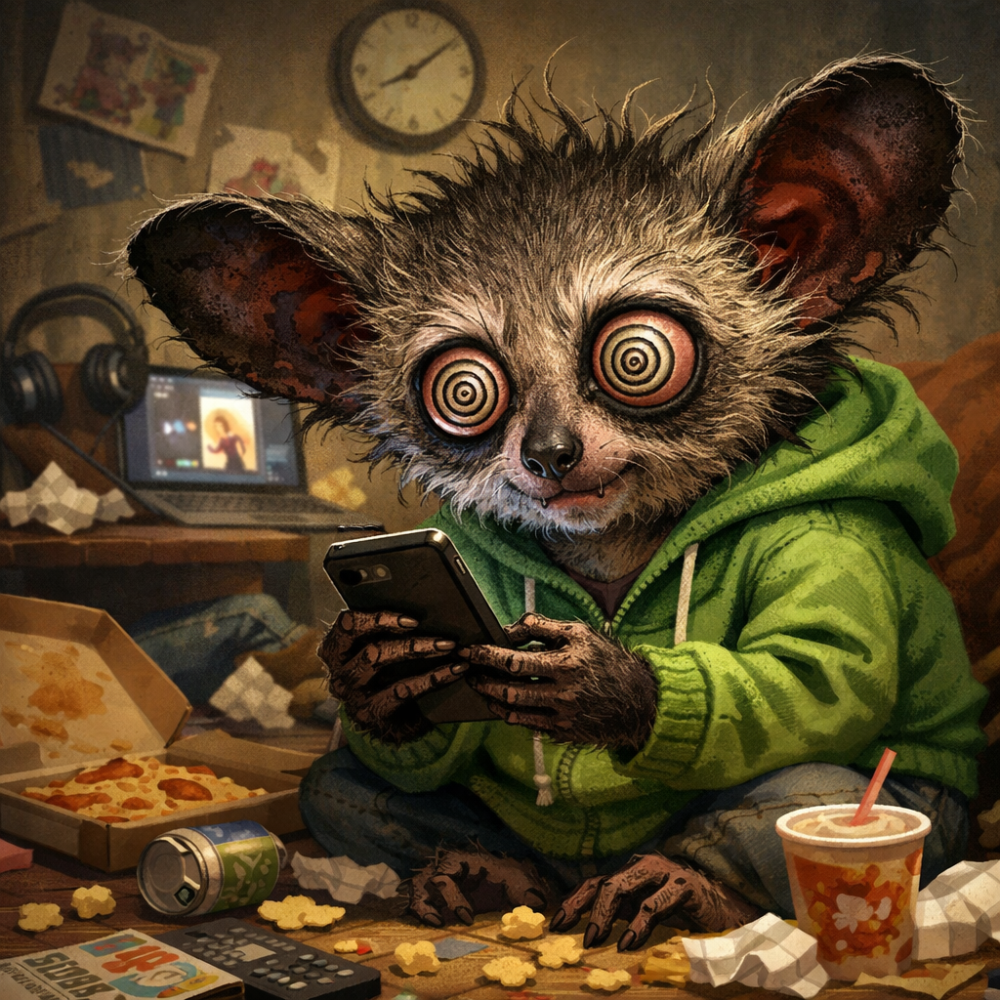

最近、「ショート動画の見過ぎ」が問題としてよく取り上げられています。気づけば何本も見続け、時間があっという間に過ぎていた――そんな経験はないでしょうか。
■ なぜ止まらなくなるのか
ショート動画は、短く強い刺激を次々と与える仕組みになっています。そのため、次のような状態になりやすいのです。
- 「あと1本だけ」が続く
- 次の動画への期待が止まらない
- 気づけば長時間経っている
👉 問題は単なる娯楽ではなく、時間・集中力・心の状態に影響することです。
■ 起こりやすい影響
見過ぎると、次のような変化が起きやすくなります。
- 長い文章や作業に集中できなくなる
- 睡眠時間が削られる
- 見た後に疲れや空虚感が残る
- 気分が上下しやすくなる
👉 つまり、「楽しみ」が生活を侵食する状態になってしまうのです。
■ 聖書はどう考えるか
聖書には、この問題に当てはまる原則がいくつもあります。
① 心を守る
「何よりも自分の心を守れ」（箴言 4:23）
何を見続けるかは、そのまま心に影響します。刺激の強い情報を浴び続けると、心は落ち着きを失います。
② 時間を大切にする
「時間を最もよく用いなさい」（エフェソス 5:15,16）
ショート動画は短いですが、積み重なると大きな時間になります。
👉 気づかないうちに、大切な時間を失っていないかがポイントです。
③ 何にも支配されない
「私は何にも支配されない」（コリント第一 6:12）
やめたいのにやめられないなら、それはすでに支配されている状態です。
④ 良いものに心を向ける
「真実なこと、清いことを考え続けなさい」（フィリピ 4:8）
見る内容は、心の質を決めます。面白さだけでなく、見た後に心がどうなるかが重要です。
■ 実践できるシンプルな対策
聖書の原則をもとにすると、次のような行動が有効です。
- 目的を決めてから見る
- 見る時間を区切る（特に寝る前は避ける）
- 心が乱れる内容を避ける
- 「やめられるか」を自分で試す
- 読書・散歩・会話などに時間を戻す
■ まとめ
ショート動画が問題なのは、「面白いから」ではなく、強すぎる刺激で心と時間を奪いやすいからです。
聖書はシンプルにこう教えています。
- 心を守る
- 時間を大切にする
- 支配されない
- 良いものを選ぶ
これらを意識することで、デジタル時代でもバランスの取れた生活ができます。